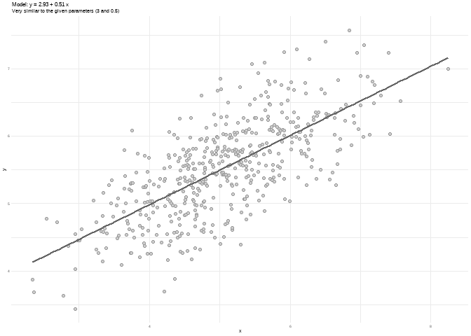
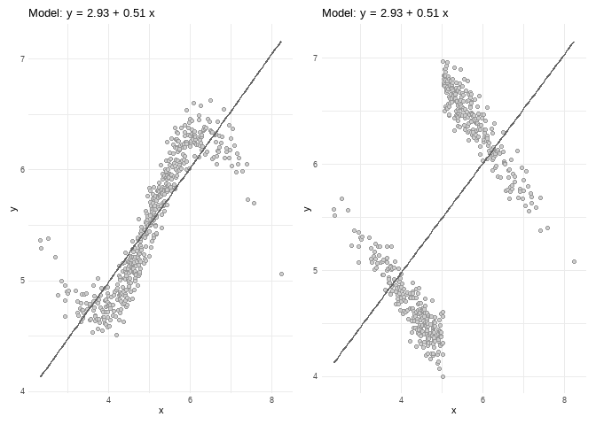
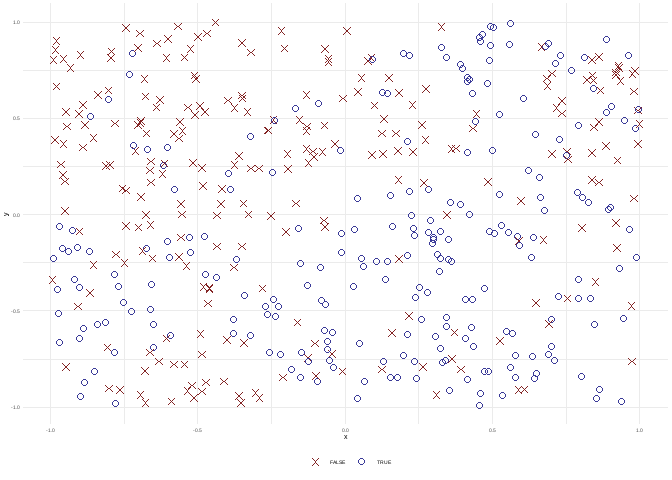
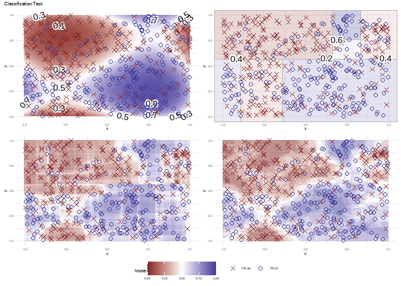

The klassets package is a collection of functions to simulate data sets to:
- Teach how some Statistics Models and Machine Learning algorithms works.
- Illustrate certain some particular events such as heteroskedasticity or the Simpson’s paradox.
- Compare the predictions between modelos, for example logistic regression vs decision tree vs
-Nearest Neighbours.

Some examples
Don’t forget to visualize the data
library(klassets)
set.seed(123)
df <- sim_quasianscombe_set_1(beta0 = 3, beta1 = 0.5)
plot(df) +
ggplot2::labs(subtitle = "Very similar to the given parameters (3 and 0.5)")
library(patchwork)
df2 <- sim_quasianscombe_set_2(df, fun = sin)
df6 <- sim_quasianscombe_set_6(df, groups = 2, b1_factor = -1)
plot(df2) + plot(df6)
Compare models in a classifications task
df <- sim_response_xy(relationship = function(x, y) sin(x*pi) > sin(y*pi))
df
#> # A tibble: 500 × 3
#> response x y
#> <fct> <dbl> <dbl>
#> 1 FALSE -0.681 0.707
#> 2 FALSE -0.711 0.332
#> 3 FALSE -0.702 0.467
#> 4 TRUE 0.0289 -0.371
#> 5 TRUE -0.0143 0.335
#> 6 TRUE 0.233 -0.0722
#> 7 FALSE -0.105 0.301
#> 8 FALSE -0.889 0.572
#> 9 FALSE -0.989 0.803
#> 10 FALSE -0.556 0.0548
#> # … with 490 more rows
plot(df)
You can fit differents models and see how the predictions are made.
plot(fit_logistic_regression(df, order = 4)) +
plot(fit_classification_tree(df)) +
plot(fit_classification_random_forest(df)) +
plot(fit_knn(df)) +
plot_layout(guides = "collect")
Where to start
You can check:
-
vignette("Quasi-Anscombe-data-sets")to know more aboutsim_quasianscombe_set*functions family. -
vignette("Binary-classification")/vignette("Regression")to see classifiers/regression models/methods. -
vignette("Clustering")to see clustering functions.
Installation
You can install the development version of klassets from GitHub with:
# install.packages("remotes")
remotes::install_github("jbkunst/klassets")Extra Info(?!)
Why the name Klassets? Just a weird merge for Class/Klass and sets.
Some inspiration and similar ideas:
- https://jumpingrivers.github.io/datasauRus/
- https://eliocamp.github.io/metamer/
- http://www.econometricsbysimulation.com/2019/03/the-importance-of-graphing-your-data.html This is almost the same, but the approach it’s different.